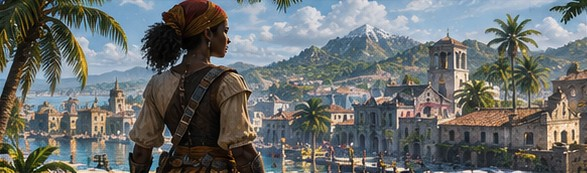

Protagonista
Adéwalé
Un antiguo esclavo convertido en Asesino, decidido a combatir la explotación.
Adéwalé, antiguo intendente del Jackdaw, emprende su propio camino en una historia centrada en la lucha contra la esclavitud en Saint-Domingue. La aventura independiente combina la identidad pirata con el compromiso de liberar a personas sometidas.
Adéwalé, antiguo intendente del Jackdaw, emprende su propio camino en una historia centrada en la lucha contra la esclavitud en Saint-Domingue. La aventura independiente combina la identidad pirata con el compromiso de liberar a personas sometidas.
Este dossier reúne los personajes, el contexto histórico, los lugares y las actividades que definen esta entrega. La información está organizada para descubrir el juego sin perderse entre sus distintas capas.
Las figuras que dan forma a la historia de Assassin’s Creed Freedom Cry.

Un antiguo esclavo convertido en Asesino, decidido a combatir la explotación.
Una mujer libre de color que dirige una red de contactos en Port-au-Prince.
Figura de la resistencia local que ayuda a organizar la liberación.
Intereses coloniales y templarios sostienen el sistema de explotación.
Saint-Domingue · 1735 · Una recreación histórica que combina acontecimientos reales y ficción.
Tras naufragar en Saint-Domingue, Adéwalé se implica en la resistencia contra la esclavitud. Sus acciones lo llevan a liberar cautivos, desmantelar redes de tráfico y enfrentarse a quienes se benefician de la violencia colonial.
Regiones, ciudades y escenarios que dan personalidad a esta aventura.
Centro urbano donde se desarrollan contactos y operaciones.
Espacios de explotación que Adéwalé puede infiltrar y liberar.
Zona marítima para navegar, explorar y combatir.
Los sistemas principales que definen la forma de jugar esta entrega.
Rescatar personas de plantaciones, convoyes y barcos.
Arma contundente característica de Adéwalé.
Herramienta silenciosa para neutralizar enemigos.
Navegar en el Experto Criollo y participar en combates marítimos.
Debilitar a los opresores y apoyar a la población.
Combinar infiltración, armas y fuerza directa.
Qué hacemos durante la aventura, cómo exploramos el mundo y qué sistemas conviene dominar.
Reconocer plantaciones y convoyes, identificar guardias y rutas de patrulla, localizar cautivos, sabotear instalaciones y liberar prisioneros. Cada rescate contribuye a la resistencia y puede desbloquear nuevas oportunidades.
Detalles y sistemas especiales que merece la pena descubrir durante la exploración.
La liberación de cautivos es el eje jugable y narrativo de la expansión.
El Experto Criollo es el barco de Adéwalé y permite continuar la exploración naval.
Freedom Cry se publicó primero como contenido descargable de Black Flag y después como experiencia independiente.
ARCHIVO EN AMPLIACIÓN · Se añadirán ubicaciones concretas y capturas propias a medida que se complete la documentación de cada juego.
Ofreció una perspectiva distinta del universo de Black Flag y colocó la liberación de personas esclavizadas en el centro de sus objetivos.